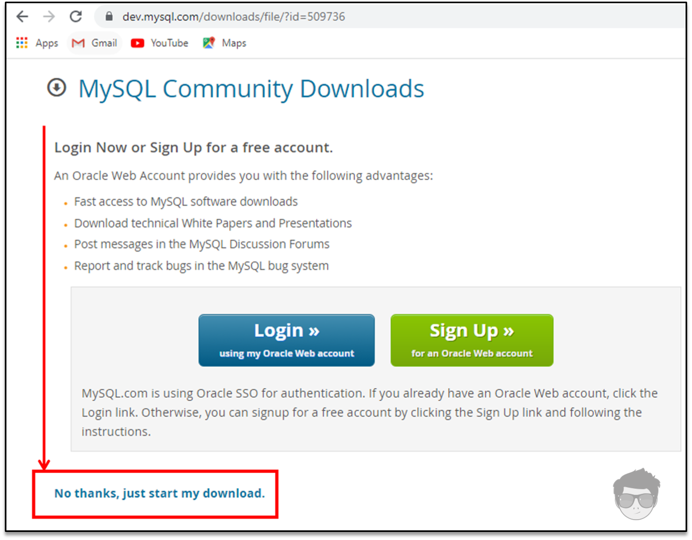
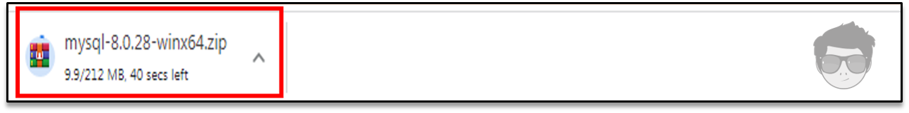
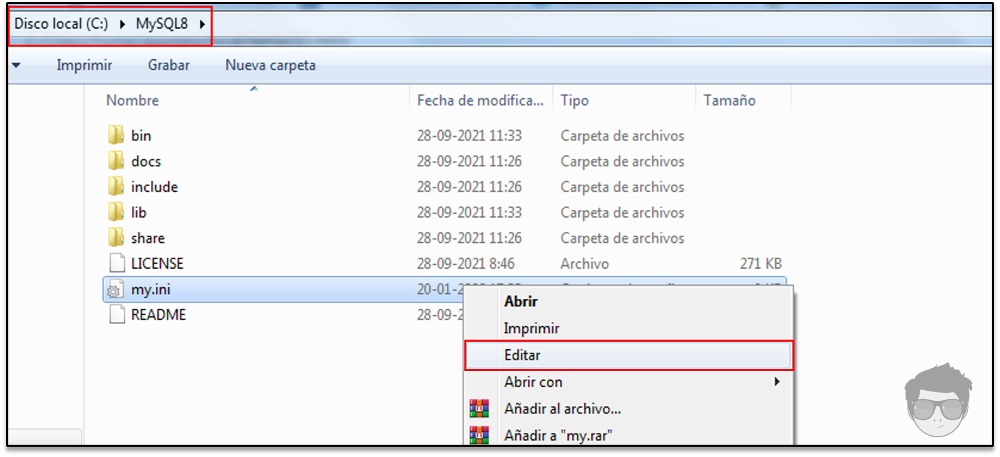
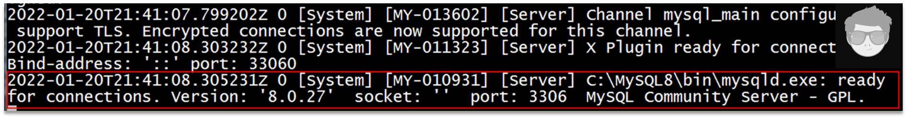
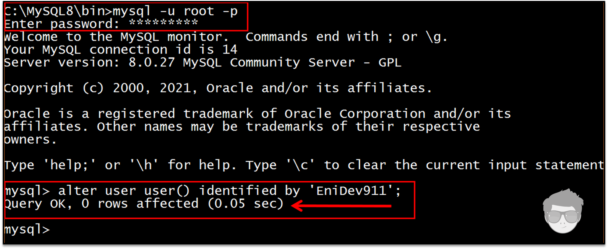
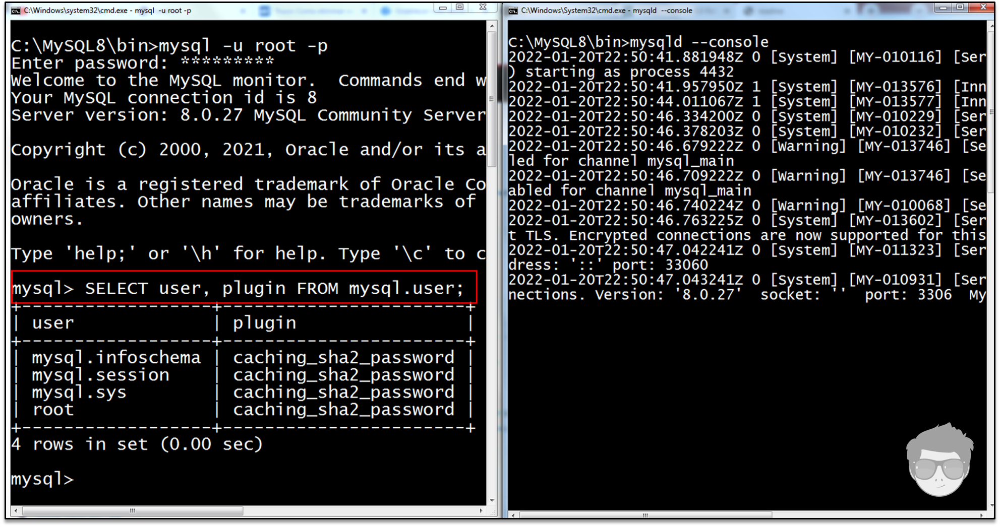

{kind=link}
Contenido
- Descarga y extrae los archivos.
- Archivos de opciones
- Inicializar servidor
- Primera conexión
- Establecer contraseña
- Configurar MySQL como un servicio
DESCARGAR ARCHIVO ZIP ▶ aquí
Ya esta seleccionado el archivo, solo damos clic en donde está señalado en la siguiente ilustración y comenzará la descarga.

Se iniciará la descarga.

Extraemos el contenido del archivo zip en el directorio deseado.

En este caso la ubicación es en 📁
"C:\MySQL8"
ARCHIVO DE OPCIONES
El archivo de opciones es la configuración que se utilizará para iniciar el servidor de base de datos MySQL. Si es necesario especificarle opciones al servidor durante su inicio, esto también puede hacerse desde la línea de comandos pero es conveniente colocarlas en un archivo.
Esto es especialmente necesario en las siguiente circuntancias:
-
El directorio de instalación o de datos son diferentes de los usados por defecto, Por ejemplo:
- 📁 C:\Program Files\MySQL\MySQL Server
8.x
📁 C:\Program Files\MySQL\MySQL Server 8.x\data
- 📁 C:\Program Files\MySQL\MySQL Server
8.x
-
Es necesario afinar la configuración del servidor para obtener mayor rendimiento.
Los parámetros declarados dentro del archivo de opciones son leidos como la configuración para iniciar el servidor de base de datos MySQL.
El archivo dentro tiene una sección o directiva exclusiva para el servidor [mysqld]
donde se puede establecer las siguientes opciones:
- basedir: el directorio base de instalación.
(En el ejemplo de esta guía el directorio base es C:\MySQL8) - datadir: la ubicación del directorio de datos.
(Este se crea por defecto dentro del directorio base de instalación cuando inicializamos por primera vez el servidor, por ende, es importante crear un archivo de opciones previamente para establecer donde queremos que se cree este directorio de datos).
Crear y editar un nuevo archivo de opciones
Un archivo de opciones puede crearse y modificarse con cualquier editor de texto, como el bloc de notas lo
importante es guardar el archivo con el nombre de my.ini en el
directorio raíz de instalación Ej:
📁 C:\MySQL8.
La modificación de este archivo conlleva el actualizar las configuraciones del servidor al iniciarse, por lo que cada vez que realicemos cambios en este archivo debemos detener el servidor e iniciarlo nuevamente una vez salvado los cambios.

En la raíz de donde se descomprimieron los archivos, creamos un nuevo archivo de opciones

A continuación un ejemplo de las opciones que tengo definidas en el archivo:
[client]
port=3306
socket=/temp/mysql.shock
[mysqld]
basedir=C:/MySQL8
datadir=C:/data
port=3306
socket=/temp/mysql.shock
key_buffer_size=16M
max_allowed_packet=8M
[mysqldump]
quick
Aunque MySQL ya viene con valores predeterminado en la configuración inicial, nos bastaría con solo indicar los valores para las opciones basedir y datadir.
Los nombres de las rutas de acceso de Windows se especifican en los archivos de opciones mediante barras diagonales (hacia adelante) en lugar de barras diagonales inversas. Si usa barras invertidas, duplíquelas Ej:
[mysqld]
basedir=C:\\MySQL8
datadir=C:\\data
nota: Si la carpeta que hemos definidos para los datos no existe, la creará por nosotros, pero si debe existir el destino de ruta que hemos indicado.
INICIALIZAR EL SERVIDOR
Como hemos apreciado el paquete ZIP no incluye un directorio data. Para inicializar una instalación de MySQL, en caso de que no hayamos creando el archivo de opciones, se creara un directorio data dentro del directorio de instalación y dentro de ese directorio se crearan las bases de datos del sistema llenando las tablas del sistema MySQL.
Usando el siguiente comando para inicializar el servidor:
mysqld --initialize o --initialize-insecure.
Este comando hace lo siguiente:
- Incializa el directorio de datos de MySQL y crea las tablas del sistema.
- Instala el esquema sys
- Crea una cuenta administrativa.
Implementación segura por defecto
- Se crea una sola cuenta administrativa ‘root’@’localhost’ con una contraseña generada aleatoriamente, que se marca como caducada.
- No se crean cuentas de usuario anónimo.
- No se crea ninguna base de datos como test accesible para todos los usuarios.
- La opción
--random-password-fileestá disponible para controlar dónde se escribe la contraseña aleatoria.

Esto puede tardar unos segundos o minutos

Ahora corremos el servidor
Al permitir el acceso del firewall del sistema, nos debe mostrar el siguiente mensaje al ejecutarse.

La opción --console es para ver el log en la línea
de comandos y nos debe indicar que se encuentra listo para recibir conexiones entrantes.
En nuestro caso especificamos el destino para las bases de datos del sistema y el resto en
C:\data si no la encuentra la crea y almacena el contenido. Si desea utilizar un
directorio de datos en una ubicación diferente, debe copiar todo el contenido del directorio data en la nueva
ubicación. Por ejemplo, si desea utilizarlo C:\mydata como directorio de datos, se
puede hacer de dos formas:
-
Mueva todo el directorio data y todo su contenido desde la ubicación predeterminada. Por ejemplo
C:\Path\installation\dataaC:\mydatay luego detiene el servidor, realiza los cambios en el archivo de opciones y se vuelve a iniciar el servidor. -
Utilizar la opción
--datadirpara especificar la nueva ubicación del directorio de datos cada vez que inicie el servidor. Ej:
mysqld --datadir 'path\your\data'

⚓ PRIMERA CONEXIÓN
Independiente de la configuración que hemos dado para conectarnos al servidor, primero que nada debemos
inicializarlo, y luego conectarnos como clientes, dentro de la carpeta data se encuentra un
archivo llamado con el nombre de tu equipo y la extensión .err abrimos ese archivo con el bloc de
nota y buscamos el password generado para el usuario root de manera temporal:

Abrimos el archivo con extensión .err

Copiamos el password

Ahora la primera tarea antes de comenzar a manipular bases de datos, será cambiar el password de nuestro usuario root. De hecho si intentamos ejecutar un comando sql nos va a requerir esta acción ya que el password generado con la inicialización tiene el estado de caducado.

⚓ ESTABLECER UNA NUEVA CONTRASEÑA
La declaración ALTER_USER modifica las cuentas de MySQL. Permite modificar las
propiedades de autenticación, SSL/TLS, límite de recursos y administración de contraseñas para las cuentas
existentes.
Para cada cuenta afectada, ALTER USER modifica la fila correspondiente en la tabla
mysql.user del sistema para reflejar las propiedades especificadas en el extracto. Las propiedades no
especificadas conservan sus valores actuales.
ALTER USER USER() IDENTIFIED BY 'proPassword123';
Esta sintaxis permite cambiar su propia contraseña sin nombrar literalmente su cuenta. A continuación hemos dado un password al usuario root con el que nos conectamos la contraseña generada temporalmente por el servidor al momento de su instalación.

Ahora recargamos los privilegios con:
FLUSH PRIVILEGES;
Ahora ya podemos conectarnos con la nueva contraseña que hemos asignado, podemos consultar en la tabla de usuario el complemento de autenticación con el siguiente comando:
SELECT user, plugin FROM mysql.user;

Adicionalmente, podemos establecer esta ruta de donde lanzamos el servidor como variable de entorno para que nos resulte más comodo lanzar el servidor desde cualquier ubicación. Con el siguiente comando podemos establecer la ruta de instalación de MySQL a la variable path del usuario:
En CMD:
SETX PATH "%path%;"C:\MySQL8\bin\
Para invocar a mysql en CMD o PowerShell:
mysql -u root -p
Cerramos la ventana de comandos y abrimos una nueva.
⚓ CONFIGURAR MYSQL COMO UN SERVICIO
Nos posicionamos dentro del directorio de instalación e ingresamos a la carpeta bin y ejecutamos los siguientes comandos. Para llevar a cabo estos pasos es necesario abrir la sesión de CMD con privilegios de administrador.
El siguiente comando es para asegurarte de no tener ninguna instancia del servidor corriendo actualmente.
mysqladmin.exe -u root shutdown
El siguiente comando registra MySQL como servicio.
:: Se registra con el nombre pasado como argumento.
:: De lo contrario solo con el nombre MySQL por defecto.
mysqld --install "MySQL8"

Ahora ya podemos iniciar el servicio o detenerlo desde la línea de comandos, pero para llevar a cabo el proceso tenemos que abrir una nueva ventana como administrador.
Iniciar el servicio con el comando net
net start MySQL
Detener el servicio con el comando:
net stop MySQL

Eliminar el servicio
sc delete "MySQL"